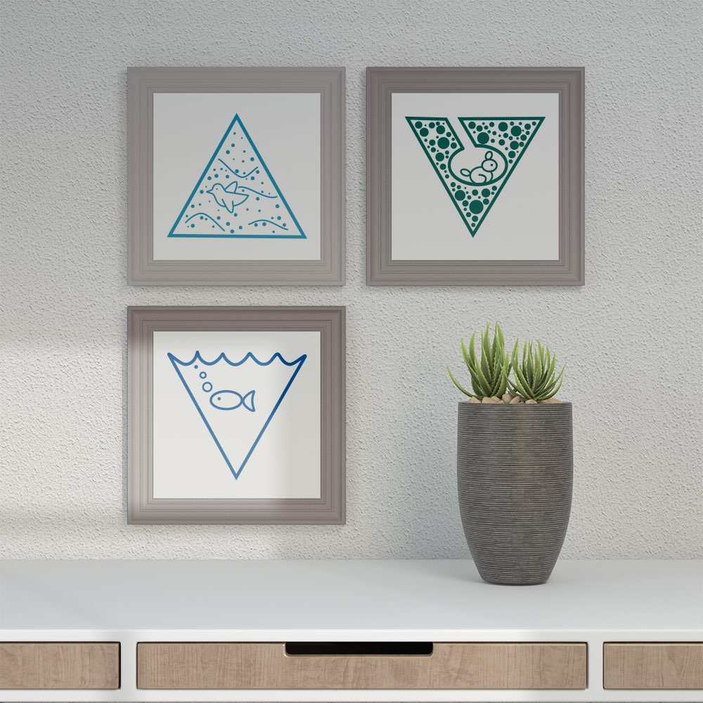

Form Language
Simple shapes
This was a fun experiment in simplifying information and I am hoping that it will inspire me to make better data visualizations.
Version 1
It is important to standardize data visualizations such as bar and pie charts but these visiualizations are more engaging when they realistically represent the units they are showing. It is very often that in infographics, charts are modified to more closely represent the units they are showing. For example representing units of water with droplets, or filled glasses.
Initial Sketches
I have loved graph paper ever since I was in the 7th grade. I even enjoyed counting the lines on graph paper so that I can center my shapes and content. If the graph paper was not the right size, then it needed to be cut!
Extra details
After a few iterations I settled on some shapes however had not decided how I would incorporate an animal into fire. I was considering a dragon however am still reflecting on whether or not it makes sense to introduce a mythical creature into the series.
Making digital
I am really impressed with the performance of the new iPad pro and pencil. So much that I have gone fully 100% iPad with Adobe Illustrator and now with Affinity Designer. I decided to return to the large size, this time 12.9-inch because I prefer sketching on A4 paper as opposed to small note pads.
Give it some life
I was really insistent on adding animals despite the fact that it complicates the form. With COVID-19 causing lockdown after lockdown, it is nice to see scenes that are populated, even if it does go against the design specifications.